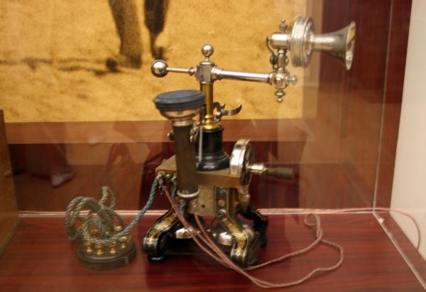

В 1837 году американский изобретатель Сэмюэль Морзе изобрел передающий аппарат – электрический телеграф и придумал систему кодов – телеграфную азбуку (азбука Морзе). В 1861 году немецкий ученый Филипп Райс изобрел устройство, способное передавать звуки на расстояние по проводам. Фактически это и был первый телефон
По этому случаю были многочисленные споры о том, кто первый изобрёл телефон. 7 марта 1876 года Александром Беллом был получен патент на изобретение телефона. Любопытно, что Александр Белл пытался изобрести не телефон, а «гармонический телеграф».